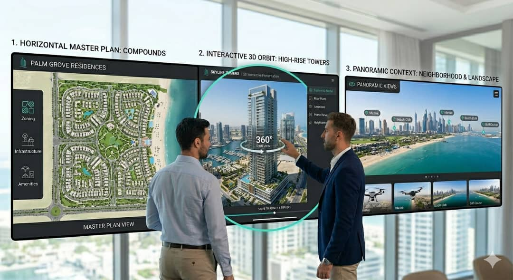
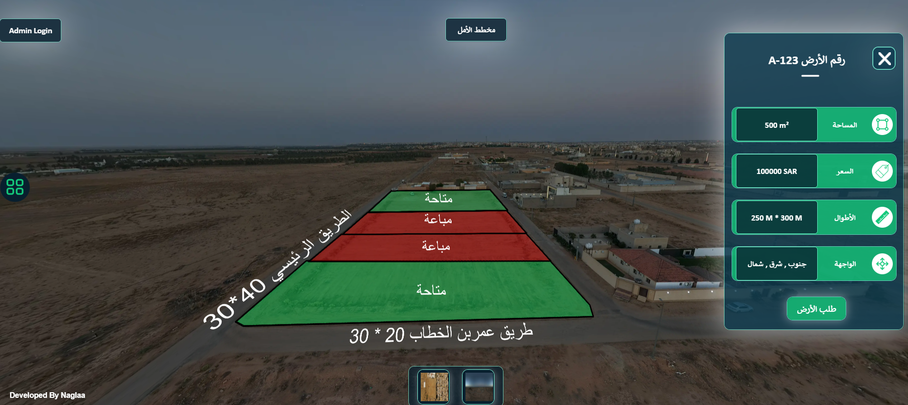
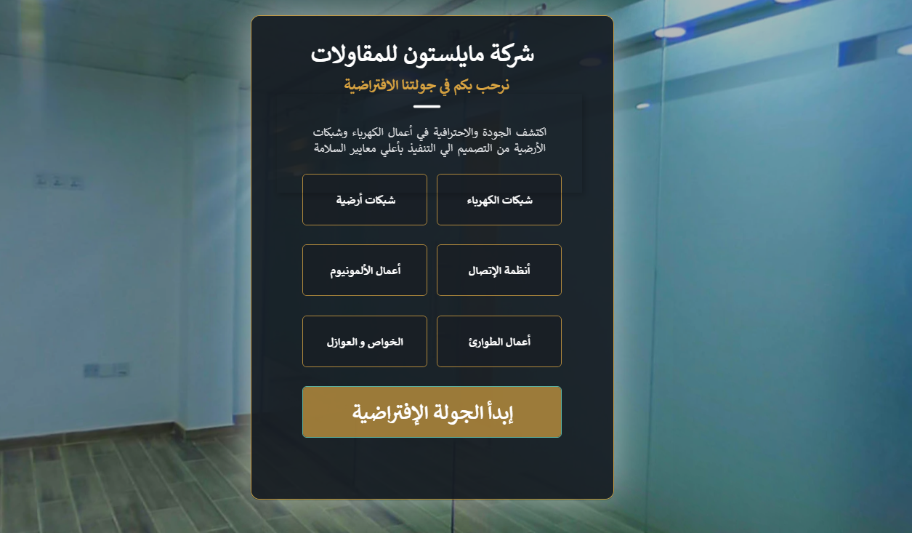
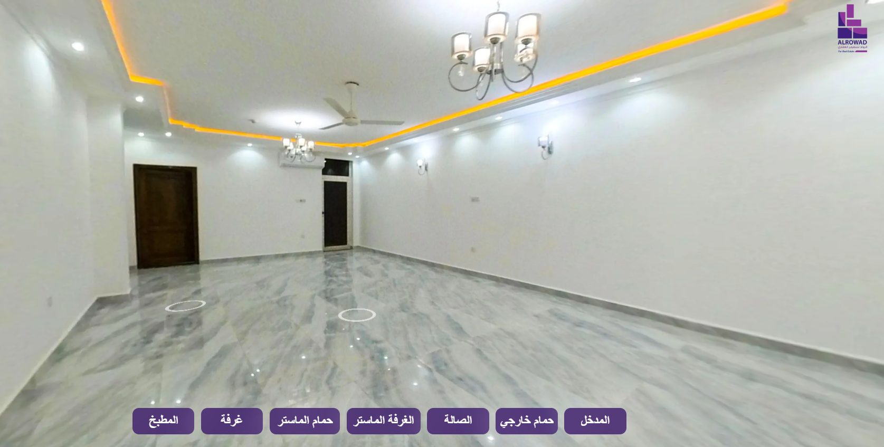
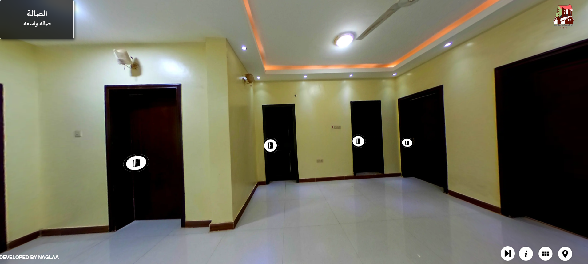

01
المخططات التفاعلية والماستر بلان
تحويل المخططات إلى تصاميم تفاعلية قائمة على تقسيم منطقي للوحدات وربطها ببيانات ديناميكية، مع تحديد منطق التنقل بين مستويات المشروع.

أعمل مع المطورين العقاريين على تحويل المشروع من فكرة على الورق إلى تجربة رقمية يستكشفها العميل بثقة قبل اتخاذ قرار الشراء.
تحميل السيرة الذاتية
أعمل على تصميم وتنفيذ أنظمة رقمية تفاعلية لمشاريع البيع
على الخارطة، حيث أقوم بتحويل المخططات السكنية إلى منصات رقمية مترابطة تدعم فهم المشروع واتخاذ قرار الشراء.
أبني الهيكل التفاعلي للمشروع، أربط الوحدات ببياناتها عبر منطق واضح، وأدمج الجولات الافتراضية، النماذج ثلاثية الأبعاد، والخرائط ضمن تجربة استخدام متكاملة.
أتحمل مسؤولية تصميم تجربة المستخدم داخل المنصة، مع التنسيق المباشر مع فرق Unreal لضمان تكامل العرض البصري مع النظام التفاعلي.
هدفي هو بناء تجربة رقمية واضحة، منظمة، ومدعومة بالبيانات تعكس المشروع بدقة قبل تنفيذه على أرض الواقع.
تحويل المخططات إلى تصاميم تفاعلية قائمة على تقسيم منطقي للوحدات وربطها ببيانات ديناميكية، مع تحديد منطق التنقل بين مستويات المشروع.
تحويل التصاميم الداخلية للوحدات إلى جولات افتراضية وربطها بالمنصة الرقمية للمشروع، مع هيكلة مسار تنقل واضح يدعم اختيار الوحدة.
دمج أنظمة الخرائط لعرض الموقع الجغرافي للمشروع والخدمات المحيطة به مع إمكانية قياس المسافات والوقت، ما يعزز الخبرة ويُسهل القرار الشرائي.
تنفيذ تكامل بين النموذج ثلاثي الأبعاد وأدوات القياس داخل المنصة، بما يتيح قراءة أبعاد المساحات بشكل تفاعلي ودعم تحليل المستخدم.
إدارة التكامل بين مخرجات Unreal والمنصة التفاعلية، مع تحديد معايير العرض البصري بما يضمن تجربة مستخدم متكاملة وجذابة.
بناء واجهات واضحة ومسارات تفاعل تقلّل خطوات المستخدم وتزيد التحويل.
ربط الجولات 360° بالبيانات داخل المنصة لتجربة متكاملة.
عرض المواقع والخدمات القريبة مع أدوات قياس المسافات ووقت الوصول.
نموذج موحّد للمواصفات، الوسائط، والحالة مع إمكانيات فلترة ومقارنة.
تصميم مسار واضح من التصفح إلى حفظ ومشاركة وتسجيل الاهتمام.

نظام تفاعلي يساعد المطورين العقاريين على عرض وإدارة الأراضي بكفاءة
عرض كامل المشروع
جولة افتراضية توثق مراحل تنفيذ أعمال السباكة والكهرباء، من التصميم حتى الإنجاز.
مشاهدة الجولة
جولة افتراضية لوحدة سكنية ضمن مجمع الرواد السكني التابع لشركة الرواد، تتيح استكشاف الشقة بتفاصيلها لدعم التسويق وتسهيل قرار الشراء.
عرض الجولة الافتراضية
جولة افتراضية لوحدة سكنية مستقلة، تتيح استكشاف مساحاتها وتفاصيلها بصريًا لدعم التسويق وتسهيل قرار الشراء.
عرض الجولة الافتراضية